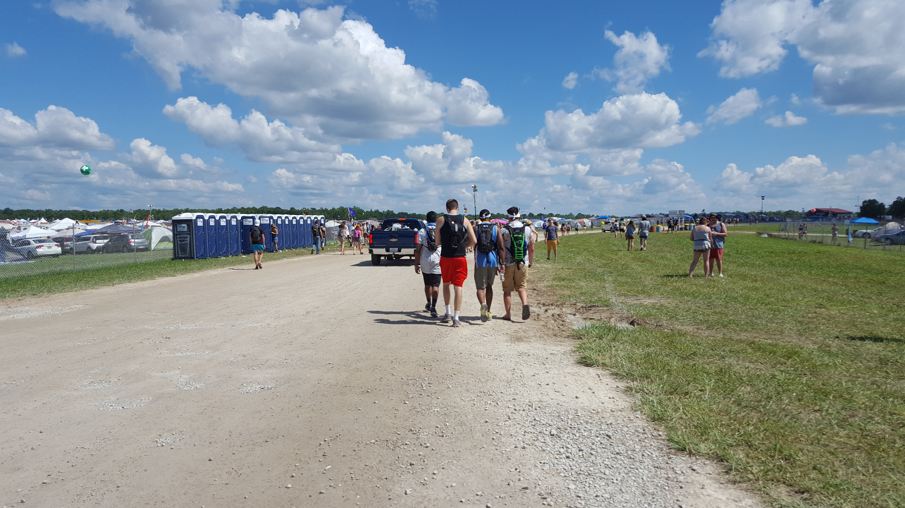

This map is from 2023, where the top is Centeroo, and the bottom is Outeroo. Centeroo is where the main acts are happening, the headliners, activities and vendors, and you're searched upon every entry. The What stage is the biggest where the headlining artists perform, then the Which stage. The Other stage is solely EDM, and That Tent is smaller but still well-known artists. Most performances are from about 2pm-2am, with the Other stage as the exception. Outeroo has the different plazas where you can roam freely, for example the House of Yes is where the Pride Parade is held first, then they take it all around the farm. Where in the Woods is my personal favorite, where there is usually art exhibits that can be interactive, and a stage in the deepest part that sometimes bumps until sunrise. There are so many different things happening in each plaza!
My Wake-up Routine
Personally, I have a routine when I wake up. I start with my hygiene and what I call my “chores”. There are open sinks and filtered water spouts in the same unit, usually near the bathroom sinks, so I have my wagon, my hygiene bag, and anything that needs to be filled with water. I brush my teeth and my face then wet my bandana, refill my shower bag, hydropack, water bottles, and usually an extra container for spare water. When I make it back to my campsite is when I shower by my car, decide on make-up or not, fix my hair, put on my outfit of the day, all while sipping on my prepped cold brew. Then I sit while discussing the day's plans with my roo pals! Once the time is about an hour or two before my first desired artist, I'll prep my bag. I drink all the water in my hydropack, put in my essentials like sunscreen, chapstick, my map, solar charger, and a couple other things. A watch is so helpful, I like putting mine on my pack strap so it's right on my shoulder and it reminds me to look at it! This is when I'm getting all excited to see everything, since it's painted and decorated different every year!
Throughout the Day
Okay, you've completed your morning routine, you're all ready to venture into centeroo for your first big live show! The main entrance is where the famous arch is! Under it is no longer an entrance, but an exit. However, it's still fun entering beside it, sharing high-fives on friday, yelling "Happy Roo!" to your fellow Bonnaroovians! The entrance will have two lines: the first to search, the second to scan your wristband. Upon being searched, they will ask you remove any liquids, to have your pockets opened, and set on a side table (and also any metal) while you walk under a scanner. I have metal on a swimsuit, so the scanner goes off every time so I'm also scanned by a person. They hand me my opened bag back, anything else I had, like a totem, then without pausing I scan my wristband until the light is green, and I am officially in Centeroo! Then I immediately get water at a refill station while I check my map. Be sure to keep an eye on it and your watch so you don't miss any shows! Keep them in an easily accessible place and check as often as possible (if your memory and attention span is short like mine). Usually if there are no artists I want to see within an hour, I will go back to my campsite to regather myself, my friends, my things, and maybe have a snack or drink to be off my feet for a moment. Keep in mind, during the evening there's usually a longer line to get into Centeroo so be sure to add some extra time before your next artist!
Other Activites
There are so many things to do outside of watching musicians! If you happen to have some free time, make some friends with similar interests by joining! There is yoga at specific times throughout the entire festival, there is a 5k loop around the farm (which in my opinion is fun to watch from the sidelines), the ferris wheel, there is a giant water slide, a beach with a volleyball net, woods to take your hammock or a blanket, Soberoo, face and hair glittering, and if you want to pay for the world’s longest salad then it is an option!
Bonnaroo - Beyond the Music